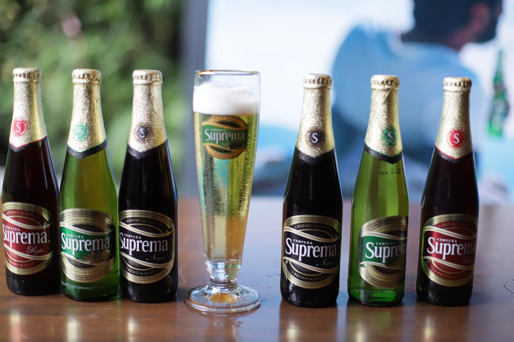
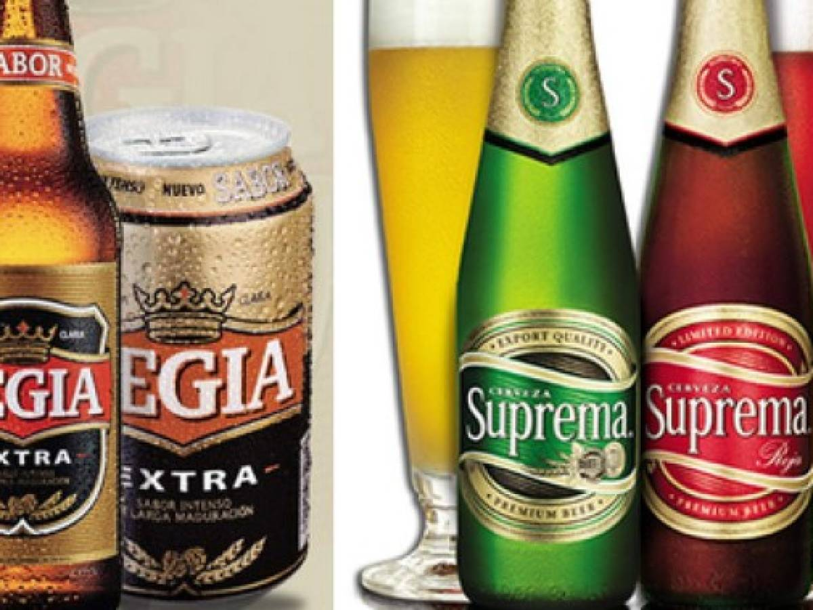

 En 1887 nace Cerveceria Nacional (CN), en el tradicional barrio Lastarria, en uno de los sitios mas bohemios de la ciudad. EN 1013, realizo el historico lanzamiento de su marca Pilsener Nacional , la cerveza de mayor venta en Chile, y en 1967 creo su marca "Suprema Beer", la cual con sus Marcas Pilsener, Stout y Ambar ha acaparado un gran sector del mercado nacional
 Dentro de las marcas hechas por Cerveceria Suprema destacan Golden refrescante sabor con toques de lupulo Citra, Pilsener la original de sabor fuerte y amargor delicado con un IBU 25, y la Regia cerveza de sabor intenso con 4.8, elaborada cuidadosamente mediante un largo proceso de maduracion